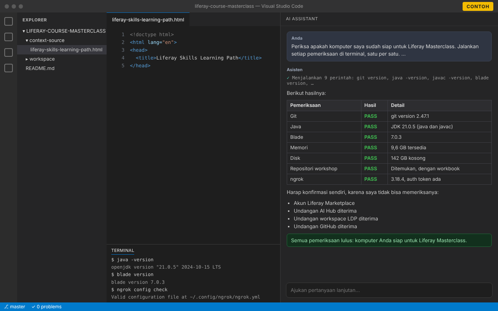

Beranda/Sumber daya/Persiapan Liferay Masterclass
Workshop
Persiapan Liferay Masterclass
Enam langkah untuk menyiapkan komputer, alat, dan akun Anda sebelum workshop. Centang setiap item setelah selesai: progres Anda disimpan di browser ini.
Siapkan komputer Anda
Pasang dan periksa setiap item di bawah. Lakukan sebelum berangkat, agar tidak bergantung pada Wi-Fi di lokasi. Jalankan perintah di terminal: aplikasi Terminal di Mac atau Linux, atau Command Prompt atau PowerShell di Windows.
Berdasarkan persiapan pelatihan kelas dari Liferay (bahasa Inggris).
-
Versi terbaru apa pun. Anda tidak memerlukan akun GitHub untuk bagian ini.
Cara memasang
Windows
Pasang Git for Windows dari git-scm.com, atau jalankan perintah di bawah. Saat instalasi, pilih untuk menggunakan Git dari command line dan juga dari perangkat lunak pihak ketiga.
winget install --id Git.Git -emacOS
Jalankan perintah di bawah dan klik Install saat macOS bertanya. Jika memakai Homebrew, Anda bisa menjalankan
brew install git.xcode-select --installLinux
Di Ubuntu atau Debian:
sudo apt install gitPeriksa
git versionAnda akan melihat sesuatu seperti ini:
git version 2.44.0 -
JDK, bukan hanya JRE, dengan versi 21.x.
Cara memasang
Windows
Pasang Microsoft Build of OpenJDK 21:
winget install Microsoft.OpenJDK.21macOS
Dengan Homebrew:
brew install --cask microsoft-openjdk@21Linux
Di Ubuntu atau Debian:
sudo apt install openjdk-21-jdkLebih suka ZIP atau TAR.GZ? Unduh OpenJDK 21 dari Microsoft, ekstrak ke folder pilihan Anda, lalu atur variabel lingkungan
JAVA_HOMEke folder tersebut. Buka terminal baru setelahnya. Jikajava -versionmenunjukkan versi lain, aturJAVA_HOMEke folder JDK 21 dan letakkan folderbin-nya paling depan diPATH.Periksa
java -version javac -versionAnda akan melihat sesuatu seperti ini:
openjdk version "21.0.5" 2024-10-15 LTS OpenJDK Runtime Environment Microsoft-10377968 (build 21.0.5+11-LTS) OpenJDK 64-Bit Server VM Microsoft-10377968 (build 21.0.5+11-LTS, mixed mode, sharing) javac 21.0.5 -
Versi 7.0 atau yang lebih baru, yang diperlukan Liferay DXP untuk bekerja dengan JDK 21. Pasang JDK terlebih dahulu.
Cara memasang
macOS dan Linux
Jalankan perintah di bawah. Setelah muncul Blade installed successfully, buka terminal baru. Jika
bladetidak ditemukan, tambahkan folder yang ditampilkan installer kePATH.curl -L https://raw.githubusercontent.com/liferay/liferay-blade-cli/master/cli/installers/local | shWindows
Unduh dan jalankan installer Liferay Project SDK: installer akan mendeteksi Java Anda dan menambahkan
bladekePATH. Jika memakai Git Bash, Anda juga bisa menjalankan perintah untuk macOS dan Linux.Jika versi Anda lebih lama dari 7.0, perbarui:
blade updatePeriksa
blade versionAnda akan melihat sesuatu seperti ini:
blade version 7.0.3 -
Cukup untuk menjalankan Liferay DXP di komputer Anda selama workshop. Tutup aplikasi berat lainnya pada hari pelaksanaan.
-
Mempelajari Learning Path yang sesuai di Liferay Learn terlebih dahulu membuat workshop berjalan lebih cepat dan lebih mendalam.
Pasang alat Anda
Anda akan bekerja di Liferay Workspace di VS Code, dibantu asisten AI. Pasang VS Code, lalu asisten AI yang bisa Anda gunakan: satu sudah cukup, dan mencentangnya menyelesaikan langkah ini.
-
VS Code memudahkan Anda bekerja dengan Liferay Workspace.
-
Setelah ekstensi terpasang, Claude siap membantu Anda langsung di VS Code.
-
Codex, agen coding dari OpenAI, sudah termasuk dalam paket ChatGPT Anda: masuk ke ekstensi dengan akun ChatGPT Anda.
-
Masuk ke VS Code dengan akun GitHub yang memiliki akses Copilot.
Buat akun Anda
Daftar dengan alamat email yang Anda gunakan untuk mendaftar workshop.
-
AI Hub dan LDP perlu mengakses instance Liferay DXP Anda melalui URL publik, dan ngrok menyediakannya. Buat akun dengan alamat email Anda agar kami bisa menambahkan Anda ke akun ngrok Liferay Enablement.
-
Anda memerlukannya untuk mengunduh file lisensi produk baru untuk CMP/DSR.
Terima undangan Anda
Anda akan menerima undangan berikut sebelum workshop. Terima masing-masing saat datang, dan periksa folder spam jika ada yang belum masuk.
-
Undangan untuk bergabung dengan AI Hub untuk pelatihan.
-
Undangan untuk bergabung dengan workspace LDP untuk pelatihan.
-
Undangan ke repositori yang berisi workbook yang akan Anda uji beserta materi sumbernya. Sebelum Anda menerimanya, tautan akan menampilkan "Page not found". Setelah diterima, clone repositori:
git clone https://github.com/liferay/liferay-course-masterclass.git
Buka workbook
Workbook adalah panduan langkah demi langkah yang akan Anda ikuti selama workshop.
-
Ada di repositori workshop, di
context-source/liferay-skills-learning-path.html. Buka dari hasil clone Anda, atau di GitHub setelah Anda mendapat akses.
Periksa semuanya dengan asisten AI Anda
Biarkan asisten AI yang Anda pasang di langkah 2 memeriksa persiapan Anda. Asisten menjalankan pemeriksaan di terminal dan memberi tahu apa yang lulus dan apa yang perlu diperbaiki.
- Di VS Code, buka folder hasil clone repositori workshop (File → Open Folder).
- Buka chat asisten AI Anda:
- Claude Code: klik ikon Claude, atau jalankan Claude Code: Open dari Command Palette.
- OpenAI Codex: klik ikon Codex di sidebar.
- GitHub Copilot: buka tampilan Chat dan ubah mode ke Agent, agar Copilot bisa menjalankan perintah.
- Salin prompt di bawah, tempel ke chat, lalu kirim. Saat asisten meminta izin menjalankan perintah, izinkan: pemeriksaan ini hanya membaca informasi.
Periksa apakah komputer saya sudah siap untuk Liferay Masterclass. Jalankan setiap pemeriksaan di terminal, satu per satu. Jangan memasang atau mengubah apa pun. 1. Git: jalankan `git version`. PASS jika Git terpasang. 2. Java: jalankan `java -version` dan `javac -version`. PASS jika keduanya menunjukkan versi 21.x (JDK, bukan hanya JRE). 3. Blade: jalankan `blade version`. PASS jika versinya 7.0 atau lebih baru. 4. Memori: periksa RAM yang kosong. PASS jika tersedia minimal 4 GB. 5. Disk: periksa ruang kosong di drive tempat folder home saya. PASS jika kosong minimal 10 GB. 6. Repositori workshop: cari clone github.com/liferay/liferay-course-masterclass milik saya (di folder yang terbuka atau folder home saya). PASS jika ada dan berisi context-source/liferay-skills-learning-path.html. 7. ngrok: jalankan `ngrok version` dan `ngrok config check`. PASS jika ngrok terpasang dan memiliki auth token; jika tidak, WARN. Lalu tampilkan hasilnya dalam bahasa Indonesia sebagai tabel dengan kolom Pemeriksaan, Hasil (PASS, WARN, atau FAIL), dan Detail. Untuk yang tidak PASS, beri tahu saya cara memperbaikinya. Terakhir, cantumkan hal yang perlu saya konfirmasi sendiri karena tidak bisa kamu periksa: akun Liferay Marketplace saya, serta undangan AI Hub, workspace LDP, dan GitHub.

-
Jalankan pemeriksaan di bawah, perbaiki yang bertanda FAIL atau WARN, lalu jalankan lagi sampai semuanya lulus. Kemudian konfirmasikan akun dan undangan yang dicantumkan.
Ada yang tidak berfungsi, atau undangan belum datang? Hubungi penyelenggara workshop, atau lihat Bantuan.